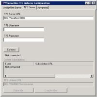
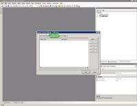
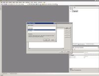

VersionOne Integration for Microsoft TFS
VersionOne's integration for Microsoft Team Foundation Server (TFS) provides visibility into source code changes while freeing the development team to focus on deliverables.
Contents
- Description
- System Requirements
- Installation and Configuration
- Using the Integration
- Troubleshooting Tips
- Technology
Description
This integration is comprised of two parts: The TFS Listener and the TFS Policy.
The TFS Listener is responsible for responding to check-in and build events from TFS. For each qualifying check-in event the listener creates a "ChangeSet" in VersionOne, providing the team visibility into the code changes for a story or defect. This visibility can be useful when tracking down defects or performing code reviews. For each qualifying build event, the listener creates a "BuildRun" in VersionOne. If possible BuildRuns are associated with stories and/or defect in VersionOne , providing the organization visibility into build contents. This visibility is useful when selecting a build to release, identifying problem builds, or generating release notes.
In order for the Listener to create associations in VersionOne, the check-in comment must include a VersionOne story or defect ID, such as "S-01454". The TFS Policy ensures that this requirement is met. When this policy is enabled for a TFS project, each comment is scanned for a VersionOne ID. If not found, the policy fails and prompts the user to select an ID from a dialog box. The user may select from items they own in active iterations, or from all items in active iterations.
The following sequence diagram shows the primary workflows of the integration:
title VersionOne Integration for TFS (V1TFS) Developer->VS: Check In Changes VS->TFS: Check In Changes TFS->V1TFS: CheckinEvent V1TFS->VersionOne: ChangeSet TFS->TFS: Build Project TFS->V1TFS: BuildCompletionEvent2 V1TFS->VersionOne: BuildRun
System Requirements
- VersionOne:
- Tested with VersionOne 13.3.8.5316. Expected to work with any version higher than 8.1.
- Compatible with all VersionOne Editions.
- Compatible with all VersionOne agile methodologies.
- VersionOne Authentication or Windows Integrated Authentication. (Does not work with other forms of SSO.)
- A member with Team Member role, or higher, on integrated projects.
- Team Foundation Server:
- Microsoft Team Foundation Server 2012, 2013
- VersionOne TFS Listener:
- Tested with Windows Server 2012. Expected to work with Windows Server 2008 or higher, provided the required version of .NET Framework can be installed (see below). Expected to work with Windows Vista or higher, provided the required versions of IIS and .NET Framework can be installed (see below). Windows must have the following features enabled:
- NET-WCF-HTTP-Activation45
- Tested with .NET Framework 4.5. Expected to work with any subsequent version.
- Tested with IIS 8.0. Expected to work with any version higher than 7.0. IIS must have the following features enabled:
- IIS-WebServerRole
- IIS-WebServer
- IIS-ISAPIFilter
- IIS-ISAPIExtensions
- NetFx4Extended-ASPNET45
- IIS-NetFxExtensibility45
- IIS-ASPNET45
- Tested with TFS Client DLLs provided by Team Explorer. TFS Client DLLs are not redistributable so they are not provided with the integration. Expected to work as long as any version of Visual Studio is installed. Recommendation: install on the same host as TFS so DLLs will be available.
- Bi-directional network access between VersionOne TFS Listener and TFS. This usually means TCP/IP port 9090 for the TFS Listener. Recommendation: install on the same host as TFS to avoid network issues such as firewalls.
- Bi-directional network access between VersionOne TFS Listener and VersionOne. This usually means TCP/IP port 443 for https.
- Tested with Windows Server 2012. Expected to work with Windows Server 2008 or higher, provided the required version of .NET Framework can be installed (see below). Expected to work with Windows Vista or higher, provided the required versions of IIS and .NET Framework can be installed (see below). Windows must have the following features enabled:
- VersionOne TFS Policy:
- Requires .NET Framework 4.5 or higher.
- Tested with VS2012 Update 3. Expected to work with any update to Visual Studio 2012.
- Tested with Professional Edition. Expected to work with Premium and Ultimate Editions.
- Tested on Windows 2012. Expected to work on any version of Windows where Visual Studio runs.
Installation and Configuration
Before using the integration you will need to perform the following actions:
- Install the TFS Listener
- Configure the TFS Listener
- Install the TFS Policy
- Enable the TFS Policy for a Project
- Configure VersionOne Build Integration
Installing the TFS Listener
The VersionOne TFS Listener is a WebService that must be installed on a machine that has access to your VersionOne Server and your Team Foundation Server. It is recommended that you install the Listener on the Team Foundation Server.
To install the TFS Listener, execute
VersionOne.TFS.Listener.Installer.msi on the appropriate machine and
follow the steps in the installation wizard. You can verify the
listener by typing the following URL into your browser:
http://[machine]:[port]/Service.svc
Replace [machine] with the name of the machine hosting the service, and [port] with the TCP port number that you provided in the installer.
For instance, if the machine hosting your TFS Server is called
"TFS2012" and you specified port 9090 in the install, your
URL would be:
http://tfs2012:9090/Service.svc
You should see a page similar to the following:

Configuring the TFS Listener
In order for the TFS Listener to work it must know which VersionOne instance to use when creating assets and making associations and which TFS instance to use for listening to events. Configuring the TFS Listener is accomplished using the TFS Listener Configuration utility. This utility is installed as part of the TFS Listener installation. If you need to reconfigure the TFS Listener at a later date, this utility is available from the Start menu under Programs > VersionOne TFS Listener.
The utility has 3 tabs
- VersionOne Server
This tab allows you to to configure VersionOne connectivity. All of these parameters are required.

- TFS Server
This tab allows you to subscribe to TFS Events. All of these parameters are required.
 - Advanced
This tab allows you to configure the regular expression used to match VersionOne IDs in Check-in comments and enable a debug log. This configuration is optional since we set the default value to a working expression. We do not recommend you change this unless necessary.

Installing the TFS Policy
The VersionOne Check-in Policy ensures that each TFS Check-in contains a VersionOne identifier. This policy must be installed on each machine running Visual Studio. To install the VersionOne Check-in policy, execute VersionOne.TFSPolicy.Installer.vsix on the client machine.
Enabling the TFS Policy for a Project
In order to be considered when performing a check-in, the VersionOne TFS Check-in policy must be enabled on a TFS project. Perform the following steps to enable the Check-in policy on a TFS Project
- Open Visual Studio
- Open the Team Explorer
- Right click on the desired project
- Select "Team Project Settings"
- Select "Source Control..."

- Select the "Check-in Policy" tab
 - Click "Add"
- Select the "VersionOne Policy"
 - Click Ok to close the "Add Check-in Policy" dialog
- Click Ok to close the "Source Control Settings" dialog

Configuring VersionOne Build Integration
In order to access TFS Build Runs in VersionOne you must configure the VersionOne application. The following steps describe how to enable build integration, create a build project, and assign that project to a project containing stories and defects.
- Log into the VersionOne application as admin
- Navigate to the Admin > Configuration > System page.
- Check the "Enable Build Integration" checkbox and click the Apply button.

- Navigate to the Admin > Projects > Build Project page

- Click Add to add a new Build Project
- Specify the following
- Name: this is how the Build Project will be known to VersionOne users
- Reference: this is how the Build Project will be known to TFS
- Click Ok to save the new Build Project
- Navigate to the Admin > Projects > Projects page
- Click Edit on the row for the project you want associated with a Build Project
- Using the "Build Projects" dropdown add the appropriate Build Project.

- Click Ok to accept the changes
- Logout


Using the Integration
Perform the following steps to use the integration:
- Open a Visual Studio project that is in the selected TFS project
- Open a file and make a change (for instance, add a comment)
- Save the change
- Check-in the change
- Type a comment, but do not provide a VersionOne identifier
- Click Check In
- Provide the VersionOne URL and your credentials
You may want to wait until after testing to cache credentials.
- Click OK
You should now be presented with the following dialog, populated with information from your VersionOne Server

- Select an Item in VersionOne
- Click OK
Once the check-in completes, launch your browser and navigate to VersionOne. Login and locate the item you chose to associate with the check-in. Click on the item to open the details page. You should now see data in the following grids: Changesets, Last Affected Build Runs, and Affected Build Runs.

{kind=link}
{kind=link}
{kind=link}
{kind=link}
{kind=link}
Troubleshooting Tips
- If you do not see any ChangeSet or Build relationships
- Verify that Changesets and Build Integration are both enabled in VersionOne
- Ensure you selected the same VersionOne Story or Defect in Visual Studio and VersionOne
- Use the TFS Listener Configuration tool and verify that you are subscribed to TFS Events
- Ensure that the following VersionOne URLs point to the same instance
- The TFS Listener URL (using the Listener Configuration utility)
- The URL used in Visual Studio
- The Browser URL
- Navigate to the TFS Listener URL, specified in the Listener Configuration Utility, and make sure the WebService is running
- Check the application event log on the TFS Listener machine for any TFS errors
- If you do not see Build relationships, check the following
- Verify that Build Integration is enabled and configured properly in VersionOne
- Verify that a build executed when the check-in was performed. If not, or if you only build daily, you will need to force a build
- ChecCheck the application event log on the TFS Listener machine for any TFS errors
Technology
- The VersionOne Integration for TFS was developed in C# using Visual Studio.io.
- The TFS Listener Installer was developed using WIX.
- Source code is available in a GitHub repo.
- Previous releases of this integration are available in the VersionOne Application Catalog.